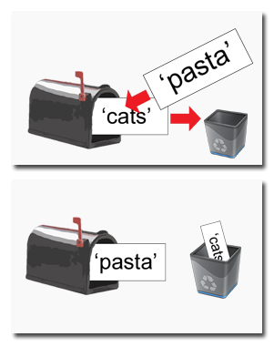

After you have installed the Python interpreter, you can start it by clicking on Start, then Programs, then Python 2.5, then IDLE (Python GUI). Look at this picture for an example:
You will see a new window with the title, "Python Shell". It will look like this:
This is the IDLE program. IDLE stands for Interactive DeveLopment Environment. IDLE is a program that helps us type in our own programs and games. This window appears when you first run IDLE and is called the interactive shell. We can type Python instructions into the shell to make the computer do what we want. A program is a whole bunch of instructions put together, like a story is made up of a whole bunch of sentences.
Let's learn some basic instructions first. We'll learn how to make the computer solve some math problems in the Python shell. Don't worry if you don't know a lot of mathematics. If you know how to add and multiply, you know enough math to do programming. Even if you aren't very good at math, programming is more about problem solving in general than it is about solving math problems.
First, type in 2+2 into the shell and press the Enter key.
Notice that the Python shell can be used like a calculator. The + sign will do addition and the - sign will do subtraction. The * sign (which is called an asterisk) is used for multiplication.
We'll have the computer solve some math problems for us. In programming (and in mathematics), whole numbers are called integers. Integers are whole numbers like 4 and 99 and 0. Numbers with fractions or decimal points are not integers. The numbers 3.5 and 42.1 and 5.0 are not integers. In Python, the number 5 is an integer but if we wrote it as 5.0 it would not be an integer. Numbers with the decimal point are called floating point numbers.
Try typing some of these math problems into the shell. Remember to press the Enter key after typing each one in.
2+2+2+2+2
8*6
10-5+6
2 + 2
These math problems are called expressions in Python.
You can put any amount of spaces in between the integers and the math signs (which are called operators), and Python can tell what you mean. There are other operators besides the mathematical operators, but we will go into them later. These integers are also called values. There are other things that are also values (such as strings) which we will talk about later.
Integers are a type of number. Numbers (and integers) are a type of value. Even though integers are numbers, not all numbers are integers. (For example, fractions and numbers with decimal points like 2.5 are numbers that are not integers.) This is like how a cat is a type of pet, but not all pets are cats. Someone may have a pet dog.
Values, operators, and expressions may seem like fancy words for numbers, math signs, and math problems. But knowing these terms will help explain other programming instructions later on.
Actually, expressions include other things besides math problems. An expression is made up of values (such as integers like 8 and 6) connected by an operator (such as the * multiplication sign). A single value by itself is also considered an expression.
The Python shell is handy for solving large math problems very quickly. Try typing in 2063 * 3581.
Notice that in Python, we don't put commas inside the numbers. We type 2063 instead of 2,063. The computer can do what you tell it to very quickly, but it needs you to tell it in a very specific way. Computer programming is all about writing out precise instructions to get the computer to do exactly what you want.
In the expression 2 + 5 + 7, the 2 + 5 part is also an expression. Expressions can contain other expressions, like a large Lego building made up of smaller Lego blocks.
So even though computers are very fast and can store a lot of information, they aren't very smart at all. They need human programmers to tell them exactly what to do.
When the computer solves the expression 10 + 5 and gets the value 15, we say the computer has evaluated the expression. Evaluating an expression reduces the expression to a single value, just like solving a math problem reduces the problem to a single number: the answer. The expressions 10 + 5 and 10 + 3 + 2 have the same value, because they both evaluate to 15. Remember that single values by themselves are also considered expressions. The expression 15 evaluates to the value 15 (that was pretty easy to evaluate, wasn't it?)
However, if you just type 5 + into the interactive shell, you will get an error message.
This is because 5 + is not an expression. Expressions have values connected by operators, but 5 + has an operator that is not connecting two values. This is why the error message appeared. The error message means that the computer does not understand the instruction you gave it.
This may not seem important, but a lot computer programming is about knowing how the computer will evaluate expressions. And remember, expressions are just values connected by operators, or one value by itself.
When we start programming, we will often want to save the values that our expressions evaluate to so we can use them later. We can store values in things called variables. Think of variables like a mailbox that you can put values inside of. You can store values inside variables with the = sign (which is called the assignment operator). Try typing spam = 15 into the shell:
This instruction (called an assignment statement) stores the value 15 in a variable named spam. Unlike expressions, statements are instructions that do not evaluate to any value, which is why there is no value that is displayed on the next line in the shell. Although, this statement does contain an expression. The value 15 by itself is an expression, which evaluates to the value 15.
Variables store values, not expressions. If we had the statement, spam = 10 + 5, then the expression 10 + 5 would first be evaluated down to 15. Then this 15 value would be the value stored in the variable, spam.
You can think of the variable like a mailbox with the value 15 inside of it. The variable name "spam" is the label on the mailbox (so we can tell one mailbox from another) and the value stored in it is like a postcard inside the mailbox.
If we type spam into the shell by itself, it will show us what value is stored inside the variable.
If we type spam + 5 into the shell, this is the same as 15 + 5 because the value inside spam is 15.
spam + 5 is also an expression, just like 15 + 5 would be an expression. When you see a variable inside an expression, the value that is stored inside the variable is used when the computer evaluate the expression. But we can change which value is stored in the variable by typing in another assignment statement:
Notice that the first time we typed in spam + 5, the expression evaluated to 20. This is because we had stored the value 15 inside the variable spam. But then we stored the value 3 inside of spam. The old value of 15 was erased to let the new value of 3 be stored inside the variable. In programming, we say that the value of 15 was overwritten. When we typed in spam + 5 after that, then that expression evaluated to 8. If the variable is like a mailbox and the value is like a postcard inside the mailbox, then the mailbox can only hold one postcard at a time.
We can also have expressions on the right side of the = sign. Python will evaluate this expression to get the final value, and then store this value inside of the variable. If you ever want to know what the current value is inside of a variable is, just type the variable name into the shell.
Remember, in expressions, the variable acts as a name for a value. We can use the variable as many times as we want. Look at this example:
When the variable spam has the integer value 15 stored in it, then spam + spam is the same as 15 + 15. This is why spam + spam evaluates to 30. And spam - spam is the same as 15 - 15, which evaluates to 0.
We can even use the value in the spam variable to assign spam with a new value:
The assignment statement spam = spam + 5 is sort of like saying "the new value of the spam variable will be the current value of spam plus five". Remember that the variable on the left side of the = sign will be assigned the value that the expression on the right side evaluates to. We can also keep increasing the value in spam by 5 several times:
Let's assign a couple of values to another two variables named eggs and fizz. We can do this by typing in fizz = 10, then press Enter, then type eggs = 15, then press Enter.
These two variables are like two mailboxes, one named fizz and the other named eggs. The fizz variable has 10 inside it, and the eggs variable has 15 inside it.
Now let's try assigning a new value to the spam variable. Type spam = fizz + eggs into the shell, then press Enter. Then type spam into the shell to see what the new value of spam is. Can you guess what it will be?
The value in spam becomes 25. This is because when we add fizz and eggs, we are adding the values stored inside fizz and eggs.
That's enough of integers and math for now. Now let's see what Python can do with text. In the Python programming language, we work with little chunks of text called strings. We can store string values inside variables just like we can store number values inside variables. When we type strings, we put them in between two single quotes. Try typing spam = 'hello' into the shell:
The single quotes are not part of the string, they just tell the computer where the string begins and ends. If you type spam into the shell to display the contents of spam, it will display the 'hello' string.
Strings can have any sort of character or sign in them. Strings can have spaces and numbers as well. These are all strings:
'hello'
'Hi there!'
'Albert'
'KITTENS'
'7 apples, 14 oranges, 3 lemons' 'A long time ago in a galaxy far, far away...'
'O*&#wY%*&OCfsdYO*&gfC%YO*&%3yc8r2'
We can also put string values inside expressions, just like we can put number values inside expressions. The + operator can add one string to the end of another. In programming, we call this string concatenation. Try typing 'Hello' + 'World!' into the shell:
The string it produces is 'HelloWorld!'. We should put a space at the end of the 'Hello' string if we don't want the words bunched together. Try typing 'Hello ' + 'World!' into the shell:
You can't add a string to an integer, or an integer number to a string. This is because a string and an integer are different data types. The data type of the value 'Hello' is a string. The data type of the value 5 is an integer.
Adding 5 and the string 'Hello' doesn't really make any sense anyway. If we tried to do it, Python would think we were trying to concatenate a string and an integer, or maybe trying to add an integer and a string, and give us an error:
These error messages may look strange and confusing, but later we'll learn what they mean and how they can help us figure out what went wrong.
However, there is a difference between using the integer 5 and the string '5'. You can tell that '5' is a string because it has quotes around it.
You may have noticed that the IDLE program makes strings appear in green text to help make them stand out while you type them. The value that the expression evaluates to, however, will show up in blue in the shell no matter what the data type.
Let's write our first program! Until now we have been typing intructions one at a time into the interactive shell. When we write programs though, we type in several instructions and have them run all at once. Click on the File menu at the top of the Python Shell window, and select New Window. A new blank window will appear. We will type our programs into this window, which is called the file editor.
A tradition for programmers learning a new language is to make their first program display the text "Hello world!" on the screen. We'll create our own Hello World program now.
You don't have to type in the numbers or period on the left side of the source code. That's just there so we can refer to each line by number in our explanation. If you look at the bottom-right corner of the source code window, it will tell you which line the cursor is currently on.
In the picture, the cursor is currently on line 12.
Type the following text into this new window. We call this text the source code of the program. These are the instructions to the Python interpreter that explain exactly how the program should behave. (Do not type the numbers at the beginning of each line. Those numbers are for making this book more readable, and they are not part of the source code.)
hello.py
- # This program says hello and asks for my name.
- print 'Hello world!'
- print 'What is your name?'
- myName = raw_input()
- print 'It is good to meet you, ' + myName
The IDLE program will give different types of instructions different colors. After you are done typing this code in, the window should look like this:
We will want to save this source code so we don't have to retype it each time we start IDLE. Click on the File menu at the top, and then click on Save As. A new window will open that asks us what name we want to give this file. Type in hello.py, so it looks like this:
Then click on the Save button.
You should save your program every once in a while as you type them. If the computer crashes or you accidentally exit from IDLE, any typing you have done since you last saved will be lost.
To load this saved program later, click on the File menu at the top, and then click on Open. A new window will appear that asks you to choose which file to open. Click on hello.py and then click on the Open button.
Now we want to run the program we have just typed in. Click on the Run menu at the top, and then click on Run Module. Or, instead of clicking on the menu, you can just push the F5 key on your keyboard. The program will run in the Python Shell window that appeared when we first ran the IDLE program. Our program asks us for our name. Go ahead and type it in, and then press the Enter key.
When we push Enter, the program will greet the user by name. We call the person who will run and use the program the user. We call the person who wrote the program the programmer. Congratulations! You've written your first program. You are now a computer programmer. You can run this program again if you like. Just click on the window with our source code again, and click on the Run menu, then Run Module. (Or press F5. This is what I like to do since it is quicker.)
How does this program work? Well, each line that we typed in is performed one after the other. The program starts at the very top and then executes each line. After the program executes the first line, it moves on and executes the second line, then it executes the third line, and so on.
Think of the program like a cake recipe. The recipe tells you the exact steps you need to take to bake a cake. Do the first step first, then the second, and keep going until you reach the end. The instructions in your program are executed one by one starting from the top and then going down. We call this the flow of execution, or just the execution for short.
So what does all of that code we typed in mean? Let's look at each line we typed in, one line at a time.
- # This program says hello and asks for my name.
This line is called a comment. Comments are ignored in the program. Comments are not for the computer, but for the programmer. They are there to remind the programmer of what the program does. Any text after the # sign (called the pound sign) is a comment. Programmers usually put comments at the top of their code to give their program a title. The IDLE program (the program that we are typing our code into) makes comments appear in red text to help make them stand out.
- print 'Hello world!'
This line is a print statement. A print statement is the print keyword followed by an expression. The statement will display the evaluated expression on the screen. Unlike typing strings into the shell, when we write a program, the value that an expression evaluates to is not displayed on the screen. To display the expression's value on the screen, we use a print statement. We want to display Hello world! on the screen, so we type the print keyword followed by the 'Hello world!' string.
What is the difference between a statement and an expression? All expressions evaluate to a single value, and statements do not evaluate to anything. An expression is made up of values connected by operators, which evaluate to a single value (for example, 2 + 3 evaluates to 5. But the print statement does not evaluate to a value.
You could not assign the value that a print statement evaluates because statements do not evaluate to values. If you tried, you would get a syntax error. (Just for fun, try typing it into the interactive shell.) A syntax error happens when Python cannot understand what you're program is trying to do.
In fact, you can type a print statement into the shell:
When the print statement runs, it shows the string itself without the quotes. But remember that in programs, nothing will appear on the screen unless you use a print statement.
- print 'What is your name?'
This line is also a print statement. This time, the program will display What is your name?.
- myName = raw_input()
This line has a variable and a function call. The variable is named myName and the function is named raw_input(). A function is a bit of code that does a particular action. When we call a function, the program does whatever the function is programmed to do. When raw_input() is called, the program waits for the user to type in text and press Enter. This text string is what the function call to the raw_input() evaluates to. The value that a function call will evaluate to is called the return value. The raw_input() function returns the string that the user typed in. Because function calls can be evaluated, they can also be part of an expression. Then this looks like a regular assignment where myName stores a string inside it.
Notice that when I talk about the raw_input() function, I add parentheses to the end of it. This is how we type out function names, because if I just wrote raw_input you would not know if I meant a variable named raw_input or a function named raw_input. The parentheses at the end let us know we are talking about a function, much like the quotes in '42' let us know we are talking about the string '42' and not the integer 42.
- print 'It is good to meet you, ' + myName
On the last line we have a print statement again. This time, we use the plus operator (+) to concatenate the string 'It is good to meet you, ' and the string stored in the myName variable. This is how we get the program to greet us by name.
After the program executes the last line, it stops. Programmers say the program has terminated or exited. All of the variables are forgotten by the computer, including the string we stored in myName. Try running the program again and enter a different name.
Remember, the computer only does exactly what you program it to. In this program, it is programmed to ask you for your name, let you type in a string, and then it will say hello and display the string you typed. But you don't have to type in your name. You can type in anything you want and the computer will treat it the same:
Let's make another program. Open a new window by clicking on the File menu at the top and then clicking on New Window. (And remember, do not type the numbers at the beginning of each line. Those are only to make the source code more readable here.)
favorites.py
- # Favorite stuff
- print 'Tell me what your favorite color is.'
- favoriteColor = raw_input()
- print 'Tell me what your favorite animal is.'
- favoriteAnimal = raw_input()
- print 'Tell me what your favorite food is.'
- favoriteFood = raw_input()
- # display our favorite stuff
- print 'You entered: ' + favoriteFood + ' ' + favoriteAnimal + ' ' + favoriteColor
- # print 'Here is a list of your favorite things.'
- print 'Color: ' + favoriteColor
- print 'Animal: ' + favoriteAnimal
- print 'Food: ' + favoriteFood
Save this program as favorites.py and then press F5 to run it.
This program looks similar to our Hello World program. Let's look at each line carefully.
- # Favorite stuff
This is another comment. The program will ignore it. It's just there to remind us what this program does if we look at the source code later.
- print 'Tell me what your favorite color is.'
Here we display a bit of text asking the user to type in their favorite color by using the print keyword.
- favoriteColor = raw_input()
Now we are going to call the raw_input() function to let the user type in their favorite color. When they press enter, the string the user entered is stored in the favoriteColor variable.
- print 'Tell me what your favorite animal is.'
- favoriteAnimal = raw_input()
These two lines are similar to the ones before. Notice that there is a blank line in between them. In the Python language, blank lines are just ignored. This is helpful because then we don't have to have all the lines bunched together.
This time, the user will type what their favorite animal is, and the string will be stored in a variable named favoriteAnimal.
- print 'Tell me what your favorite food is.'
- favoriteFood = raw_input()
Finally, we will let the user type in their favorite food. This string is stored in yet another variable called favoriteFood.
- # display our favorite stuff
Here's another comment. Comments don't always have to go at the top of the program. They can show up anywhere. All the text after the pound sign (#) will be ignored by the program and won't be shown to the user. It just reminds the programmer what the program does.
- print 'You entered: ' + favoriteFood + ' ' + favoriteAnimal + ' ' + favoriteColor
This print statement will show us the favorite food, animal, and color we entered. The plus sign is used to combine the string 'You entered: ' with the strings we stored in our variables earlier. We don't want the strings in the variable to be bunched together, so we add a string with one space in between them. This will make the entire string look something like this:
'You entered: pasta cats blue'
Instead of this:
'You entered: pastacatsblue'
- # print 'Here is a list of your favorite things.'
This line looks like another print statement. But do you see the pound sign at the start of it? That means this line is really a comment and the program ignores this code. Sometimes the programmer may want to take something out of the source code, but also might want to add it back in later. Instead of deleting the code, you can just put a pound sign to have it ignored for now. If you delete the pound sign, then this code will no longer be a comment and would be executed with the rest of the program. In IDLE, you can easily see that this is a comment and not code because it is in red text.
- print 'Color: ' + favoriteColor
- print 'Animal: ' + favoriteAnimal
- print 'Food: ' + favoriteFood
These three lines will display our favorite things once again.
When the last line of the program executes, the program terminates.
The computer doesn't really care what you type in. It doesn't understand what food or animals or colors are. All it knows is that the user will type in some string. We don't have to type in our favorite things at all. Look at this run of the program where I type in some crazy answers:
All the program understands is that it should store the string the user enters into the variables and display the string in those variables later on.
The program also does not care what name we give to our variables. Our program would work just the same if it looked like this:
favorites2.py
- # Favorite stuff 2
- print 'Tell me what your favorite color is.'
- q = raw_input()
- print 'Tell me what your favorite animal is.'
- fizzy = raw_input()
- print 'Tell me what your favorite food is.'
- AbrahamLincoln = raw_input()
- # display our favorite stuff
- print 'You entered: ' + q + ' ' + fizzy + ' ' + AbrahamLincoln
- #print 'Here is a list of your favorite things.'
- print 'Color: ' + q
- print 'Animal: ' + fizzy
- print 'Food: ' + AbrahamLincoln
The names we give the variables are more for our benefit than the computer's benefit. One name looks the same as any other to the computer. The name q doesn't help us remember that this variable is suppose to store the string of the user's favorite color. And the name fizzy isn't any type of animal. And using the name AbrahamLincoln for the variable to store our favorite color is just silly. But since we use the variables in the same way as before, the program works the exact same.
Have you noticed that variable names that are made up of more than one word have the other words capitalized? This is to make the variable names easier to read because variable names can't have spaces in them.
thisnameiskindofhardtoread
thisNameIsEasierToRead
Leave the first word in lowercase, but start the other words in uppercase. We call something like this a convention: we don't have to do it this way, but doing it this way makes it a little easier. The convention for capitalizing variable names is to leave the first word in lowercase but start the other words in uppercase.
Remember, the computer doesn't care how we name our variables. It only cares how we use them in the program. Look at this program:
favorites3.py
- # Favorite stuff 3
- print 'Tell me what your favorite color is.'
- q = raw_input()
- print 'Tell me what your favorite animal is.'
- AbrahamLincoln = raw_input()
- print 'Tell me what your favorite food is.'
- AbrahamLincoln = raw_input()
- # display our favorite stuff
- print 'You entered: ' + q + ' ' + AbrahamLincoln + ' ' + AbrahamLincoln
- #print 'Here is a list of your favorite things.'
- print 'Color: ' + q
- print 'Animal: ' + AbrahamLincoln
- print 'Food: ' + AbrahamLincoln
When we run this program, it looks like this:
What happened here? If you notice, we use the same variable named AbrahamLincoln to store a string of our favorite animal and our favorite food. When the user typed in their favorite animal, this string was stored in the AbrahamLincoln variable. But when the user typed in their favorite food, this string was also stored in the AbrahamLincoln variable and the favorite food string was forgotten. The favorite food value was overwritten. The computer can't tell the difference between them because they use the same name. So the computer thinks we mean to use the same variable.

A variable can only store one value at a time.
The computer will do exactly what we tell it to do, even if we tell it to do the wrong thing. The computer can't read our minds and figure out what we want it to do. It is up to the programmer to make sure the program works just right.
As a final note about variable and function names, I should tell you that the computer does pay attention to the capitalization of the name. The computer considers these names to be four separate variables:
fizzy
Fizzy
FIZZY
fIzZy
Four differently-cased names means four different variables.
We call this case-sensitivity. In the Python language, variable and function names are case-sensitive. If you try to call the RAW_INPUT() function instead of the raw_input() function, you will get an error because the computer doesn't know of a function named RAW_INPUT(). It only knows a function named raw_input().
So remember that even though the computer doesn't care what you name your variables or how you capitalize them, be sure to always use the same capitalization. It is also a convention to never use two different variables with the same name but different capitalization. If you use the variable favoriteFOOD to store the string of your favorite breakfast food and the variable FAVORITEfood to store your favorite dinner food, it is easy to forget which is which.
You don't always have to finish typing in a program before you run it. You can just have some of the code complete, and then run it just to see how the program behaves. Programmers will often type some code, run the program, type some more code, run the program again, and so on in order to make sure the code is coming along the way they like. You can also always use the interactive shell to type single lines of code in to see what it does.
Now that we have some of the basics down, in the next chapter we will create our first game!
Things Covered In This Chapter:
- Using IDLE's interactive shell to run instructions.
- Flow of execution
- Expressions, and evaluating expressions
- Integers
- Operators (such as + - *)
- Variables
- Assignment statements
- Overwriting values in variables.
- Strings
- String concatenation
- Data types (such as strings or integers)
- Using IDLE to write source code.
- Saving and running programs in IDLE.
- The print statement.
- The raw_input() function.
- Comments
- Case-sensitivity
- Conventions